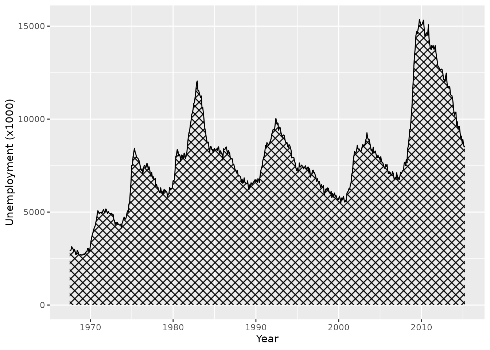
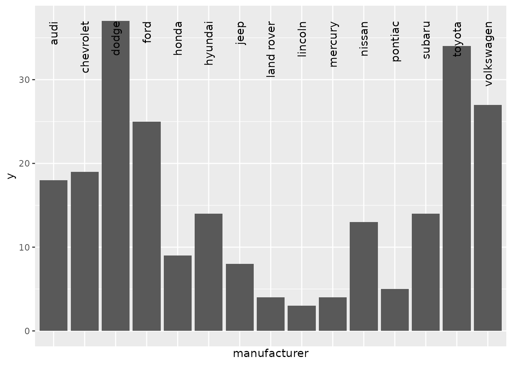
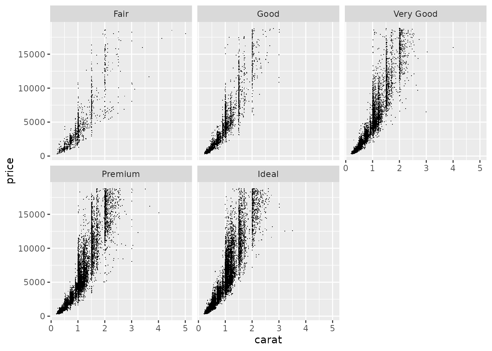

library(ggplot2)
library(grid)
# Some graphics devices don't support gradients and patterns. We set the
# device to ragg, which does support these.
knitr::opts_chunk$set(dev = "ragg_png")Exercises for session 1.2
Headings
Exercise 1.2.1
We can use the label attribute in columns to automatically label a variable. Complete the chunk below to set a label attribute for the unemploy column in the economics dataset. Per ?economics, the unemploy variable gives the number of unemployed people in thousands.
attr(economics$date, "label") <- "Year"
...ggplot(economics, aes(date, unemploy)) +
geom_area(alpha = 0.4, colour = "black")Exercise 1.2.2
If don’t have pre-set labels, we can also use the labs(dictionary) argument to populate column-label pairs. Use this argument to label the variables in the plot below. You can use ?mpg to find out what the columns are.
ggplot(mpg, aes(displ, hwy, colour = drv)) +
geom_point() +
labs(dictionary = ...)Patterns and gradients
Exercise 1.2.3
Use grid::linearGradient() to set up a horizontal colour gradient. Which arguments do you have to tweak to change the default diagonal gradient to a horizontal one? How would you set a vertical gradient instead?
gradient <- ...
ggplot(economics, aes(date, unemploy)) +
geom_area(fill = list(gradient), colour = "black")Exercise 1.2.4
The following code sets up a crosshatch pattern that can be used as the fill aesthetic.
width <- height <- unit(3, "mm")
crosshatch <- pattern(
segmentsGrob(
x0 = c(0, 1), x1 = c(1, 0),
y0 = c(0, 0), y1 = c(1, 1),
gp = gg_par(col = "black", lwd = 0.5),
vp = viewport(width = width, height = height)
),
width = width, height = height,
extend = "repeat"
)
ggplot(economics, aes(date, unemploy)) +
geom_area(fill = crosshatch, colour = "black")
Create a new pattern of your liking. Can you design a polka-dot or checkerboard pattern? You can use grid::circleGrob() and grid::rectGrob() for circles and rectangles respectively. We’ll use it to create a manual fill scale of patterns.
my_pattern <- pattern(
...
)
patterns <- list(
crosshatch,
gradient,
my_pattern
)
ggplot(palmerpenguins::penguins) +
aes(species, fill = island) +
geom_bar() +
scale_fill_manual(values = patterns)Delayed evaluation
Exercise 1.2.5
In the plot below, can you redirect the alpha aesthetic to represent the count computed variable? You can set the fill aesthetic to a fixed colour like "black". For an extra challenge, can you use scale_alpha_continuous() to anchor 0 at complete transparency?
ggplot(diamonds) +
aes(carat, price) +
stat_bin_2d(
binwidth = c(0.05, 200)
)
Polar coordinates
Exercise 1.2.6
Plot p displays a Cartesian bar chart of car manufacturers. Add a coord_radial() with arguments to p to make a half-ring shape coxcomb/windrose chart with nicely displayed text.
p <- ggplot(mpg) +
aes(manufacturer, label = manufacturer) +
geom_bar() +
geom_text(
aes(y = 37),
# Prevent duplicated labels
data = ~ dplyr::filter(.x, !duplicated(manufacturer)),
angle = 90, hjust = 1
) +
scale_x_discrete(guide = "none")
p
Facets
Exercise 1.2.7
Given the following code, adapt the facet_wrap() statement to:
- Mirror the facet order
- Place labelled axes at the bottom of every panel
- Place axis ticks on all y-axes
ggplot(diamonds) +
aes(carat, price) +
geom_point(shape = ".") +
facet_wrap(~ cut, dir = "lt")